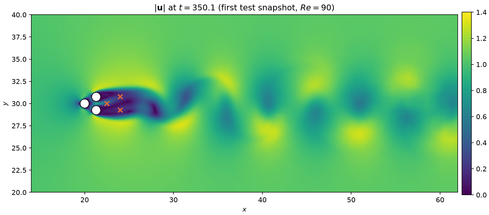

qlroms.intrusive_qlroms.pinball — fluidic pinball (FEniCSx)
Incompressible Navier–Stokes past three cylinders, solved with a dolfinx fractional-step scheme on Taylor–Hood P2/P1. The intrusive member uses mass-orthonormal velocity POD modes plus supremizers, UFL assembly of the projected momentum and pressure-Poisson equations, and pressure elimination through the PPE, so it has the same closed quadratic form as the KS members.
dolfinx is needed only to generate snapshots, run the FOM, or build a model on a cache
miss: pinball, pinball.rom and pinball.config import without it, and cached models
reload without it. Everything that touches dolfinx lives in aux_fenics and solver.

\(|\mathbf{u}|\) at the first test snapshot of the \(Re = 90\) campaign (interpolated from the P2 velocity nodes of the Taylor–Hood mesh); white disks are the three cylinders, crosses the near-wake probes FOM observes (obs_idx).
At a glance
| Name | One-liner |
|---|---|
config.PODGalerkinODEOperators |
Dolfinx-free container of one chart's reduced momentum + PPE operators; closed_quadratic_operators() eliminates the pressure. .Psi (the chart's pressure POD modes, centered on .pressure_center) plus .recover_pressure(a) reconstruct the physical pressure field from a reduced velocity coordinate; None on a model cached before this existed. .correct_divergence(a) is the minimal-norm projection of a onto the chart's own reduced-divergence constraint \(\mathbf{D}\bm{a}+\bm{d}=0\). |
fom.FOM |
The solver as a dynamodels discrete map (state = stacked \([\bm{u}; p]\) dofs, obs_idx sensors, serial, \(m = 1\)). |
rom.ROM |
The case's GalerkinROM: mass-orthonormal velocity chart (incl. supremizers) + pressure-eliminated \((\bm{b},\mathbf{A},\mathsf{B})\). |
rom.build_local_model(Xv, Xp, *, K, r_velocity, r_pressure, reynolds, dt, save_dir, mesh_dir, ...) |
Cluster → weighted POD + supremizers → UFL Galerkin + PPE elimination → qlGalerkin; cached, dolfinx only on a miss. The snapshots are clustered and the states assigned to charts with the velocity mass matrix (cluster_metric="mass", the default; "euclidean" reproduces the earlier dof-distance partition), and for \(K>1\) the exact atlas is built in that metric. pressure_centroid (default "poisson_from_velocity_centroid", a Poisson solve consistent with the PPE the fluctuation obeys; "empirical" is the plain cluster mean) sets the point the pressure is expanded around -- the pressure POD basis and the supremizer enrichment are centered on that same choice. The cache name carries both the clustering metric (\(K>1\) only) and the pressure centroid (always). |
rom.assemble_galerkin_operators(...) |
The UFL assembly of one chart's operators. |
rom.free_run_divergence_free(model, x0, n_steps) |
Alias of qlroms.free_run: every pinball qlGalerkin step is predict (one ETDRK4 step) / correct (PODGalerkinODEOperators.correct_divergence), in step and forecast alike -- kills the reduced-divergence drift a plain free_run accumulates over a long closed loop, but is a kinematic projection, not a stabiliser: it does not by itself fix instability from an unstable eigenvalue of \(\mathbf{A}_{\text{eff}}\). Needs model.pressure_ops. |
solver.PinballFOM, solver.PinballFOMParameters |
The fractional-step solver: run() for snapshot campaigns (MPI-capable), step() / get_state() / set_state() for the FOM adapter. wall_bc selects the channel side walls: "no_slip" (default, physical rigid walls) or "far_field" (walls reuse the inlet's \(\bm{u}=(1,0)\) profile, how the fom_re130-style production campaigns were generated); obstacles are always no-slip. Saved in snapshot_metadata.npz and in FOM's cache filename. |
aux_fenics |
Mesh labels, loader and gmsh generator, taylor_hood_spaces, assemble_mass_matrix, dirichlet_bcs, supremizer and pressure-centroid solves. |
build_pinball.load_snapshots |
Snapshot loading — see qlroms.intrusive_qlroms. |
build_pinball.load_mass_matrix(kind, mesh_dir, n_dof) |
The FEM mass matrix (velocity or pressure) read without dolfinx from the file build_local_model or run_pinball_fom.py --export-mass writes next to the mesh; checks the dof count against the snapshots. |
qlroms.intrusive_qlroms.pinball.config
pinball/config.py -- PODGalerkinODEOperators, the dolfinx-free container of one chart's reduced momentum + pressure-Poisson operators assembled by pinball.rom (UFL); cached models carry a list of them in model.pressure_ops, so this class must stay importable without dolfinx and keep its module path.
PODGalerkinODEOperators
dataclass
Reduced continuous-time operators for one affine POD chart (pinball/rom.py):
a_dot = f + A a + B(a, a) + P b A_pr b = p0 - lap(p_c) + P1 a + P2(a, a)
Source code in qlroms/intrusive_qlroms/pinball/config.py
25 26 27 28 29 30 31 32 33 34 35 36 37 38 39 40 41 42 43 44 45 46 47 48 49 50 51 52 53 54 55 56 57 58 59 60 61 62 63 64 65 66 67 68 69 70 71 72 73 74 75 76 77 78 79 80 81 82 83 84 85 86 87 88 89 90 91 92 93 94 95 96 97 98 99 100 101 102 103 104 105 106 107 108 109 110 111 112 113 114 115 116 117 118 119 120 121 122 123 124 125 126 127 128 129 130 131 132 133 134 135 136 137 138 139 140 141 142 | |
correct_divergence(a)
Minimal-norm correction of a onto this chart's reduced-divergence constraint D a + d = 0 (divergence_residual(a_corrected) ~= 0): the corrector half of a predict (one ETDRK4 step of the closed quadratic ODE) / correct (this) forecast -- see pinball.rom.free_run_divergence_free. Because Phi is Mw-orthonormal, the plain Euclidean least-squares correction on a IS already the minimal correction in the model's own physical (Mw) norm: ||Phi c||_Mw = ||c||_2 for any coefficient vector c. A no-op when the chart carries no pressure modes (r_pressure == 0).
Source code in qlroms/intrusive_qlroms/pinball/config.py
102 103 104 105 106 107 108 109 110 111 112 113 114 | |
recover_pressure(a, b=None)
Physical pressure field p ~= pressure_center + Psi @ b (b solved from the reduced velocity coordinate a via the PPE, solve_pressure, if not given directly).
Source code in qlroms/intrusive_qlroms/pinball/config.py
116 117 118 119 120 121 122 123 124 125 | |
closed_quadratic_operators()
Pressure-eliminated (f_eff, A_eff, B_eff): substitute the PPE solution b(a) = A_pr^{-1}(p0 - lap(p_c) + P1 a + P2(a,a)) into the momentum equation.
Source code in qlroms/intrusive_qlroms/pinball/config.py
127 128 129 130 131 132 133 134 135 136 137 138 139 140 141 142 | |
qlroms.intrusive_qlroms.pinball.fom
Pinball full-order model as a dynamodels.Model (discrete map).
FOM wraps the dolfinx fractional-step solver (pinball.solver.PinballFOM) behind the dynamodels Model protocol, observing the velocity-dof indices obs_idx (psi[obs_idx]).
Serial and single-member by design: the state is the stacked [velocity; pressure] dof vector and m = 1 (FOM ensembles are compute campaigns, not a Model feature). dolfinx is imported only inside _build_solver, so the module stays importable without a FEniCSx install (tests stub _build_solver).
FOM
Bases: Model
Fractional-step pinball Navier-Stokes solver as a dynamodels discrete map.
Parameters:
| Name | Type | Description | Default |
|---|---|---|---|
psi0
|
ndarray
|
Initial stacked [velocity; pressure] state, |
None
|
dt
|
float
|
Output step; defaults to |
None
|
reynolds
|
float
|
Reynolds number -- a declared dynamodels parameter (enters alpha0 and the
dataset filename). SET it, don't assimilate it; synced to the solver's
viscosity Constant at every |
60.0
|
mesh_dir
|
path - like
|
Pregenerated mesh directory (see pinball.aux_fenics); None uses the loader default. |
None
|
obs_idx
|
array_like of int
|
Sensor indices into the stacked state (velocity dofs; a qlROM observes the same sensors through its H = Phi[obs_idx] rows). |
(0,)
|
dt_solver
|
float
|
Time step of the fractional-step scheme itself. |
0.01
|
wall_bc
|
(no_slip, far_field)
|
Channel side-wall condition: "no_slip" (default) are physical rigid walls; "far_field" reuses the inlet's u=(1,0) profile there instead, the large-domain approximation the fom_re130-style production campaigns were actually generated with. Obstacles are always no-slip regardless. See pinball.solver.PinballFOMParameters.wall_bc. |
"no_slip"
|
Source code in qlroms/intrusive_qlroms/pinball/fom.py
21 22 23 24 25 26 27 28 29 30 31 32 33 34 35 36 37 38 39 40 41 42 43 44 45 46 47 48 49 50 51 52 53 54 55 56 57 58 59 60 61 62 63 64 65 66 67 68 69 70 71 72 73 74 75 76 77 78 79 80 81 82 83 84 85 86 87 88 89 90 91 92 93 94 95 96 97 98 99 100 101 102 103 104 105 106 107 108 109 110 111 112 113 114 115 116 117 118 119 120 121 122 123 124 125 126 127 128 129 130 131 132 133 134 135 136 137 138 139 140 141 142 143 144 145 146 147 148 149 150 151 152 153 154 155 156 157 158 159 160 161 162 163 164 165 166 167 168 169 170 171 172 173 174 175 176 177 178 179 180 181 182 183 184 185 186 187 188 189 190 191 192 193 | |
dt_step
property
float: solver step rounded as Model rounds dt, so dt == dt_solver
compares equal inside DiscreteIntegrator (coarser dt -> interpolation).
obs_labels
property
list of str: LaTeX labels for the sensor observables, \(u(x_i)\).
time_step(Nt=1, **kwargs)
Advance the solver Nt fractional steps from current_state.
Returns (psi, t): trajectory (Nt + 1, Nphi, 1) with psi[0] the
current state, and the (Nt + 1,) time grid.
Source code in qlroms/intrusive_qlroms/pinball/fom.py
121 122 123 124 125 126 127 128 129 130 131 132 133 134 135 136 137 138 139 140 141 142 143 144 145 146 147 148 149 150 151 152 153 | |
get_observables(Nt=1, **kwargs)
Sensor values: the obs_idx rows of the trailing state(s).
Source code in qlroms/intrusive_qlroms/pinball/fom.py
156 157 158 159 160 | |
__deepcopy__(memo)
Deep copy everything EXCEPT the solver (PETSc objects do not deepcopy): the copy rebuilds it and re-seeds from current_state on the first time_step.
Source code in qlroms/intrusive_qlroms/pinball/fom.py
168 169 170 171 172 173 174 175 176 177 178 179 180 181 | |
qlroms.intrusive_qlroms.pinball.rom
pinball/rom.py -- the intrusive Galerkin equations for the pinball (Navier-Stokes) case, mirroring ks1d/rom.py: ROM (the case's single-cluster member), qlROM, the governing-equation projection (assemble_galerkin_operators) and build_local_model, which caches itself and needs dolfinx only on a cache miss (all dolfinx/ufl imports are local to the two build functions, so cached models reload and this module imports without FEniCSx). Everything generic (charts, clustering, POD, compilation, DA) comes from qlroms.
The reduced model, per affine chart (velocity modes Phi mass-orthonormal, incl. supremizers; velocity centered on the cluster mean; pressure expanded around the selected pressure centroid -- the pressure POD basis and the supremizers are built around that SAME centroid, not the empirical mean, whenever the two differ):
a_dot = f + A a + B(a, a) + P b (projected momentum equation)
A_pr b = p0 - lap(p_c) + P1 a + P2(a, a) (pressure-Poisson equation, PPE)
with the UFL assembly below providing f = -(u_c.grad u_c, phi_i) + (p_c, div phi_i) - nu (grad u_c, grad phi_i) A = -(u_c.grad phi_j + phi_j.grad u_c, phi_i) - nu (grad phi_j, grad phi_i) B = -(phi_j.grad phi_k, phi_i) P = D_r^T, D_r[l, i] = (div phi_i, psi_l) A_pr = (grad psi_k, grad psi_j), PPE right side from -(conv, grad psi_l).
Eliminating pressure through the PPE closes the velocity dynamics into the affine- quadratic form a_dot = b + A a + B(a, a) every qlroms family shares (PODGalerkinODEOperators.closed_quadratic_operators) -- a compilation of those members IS a qlGalerkin (build_local_model below; K=1 is the global case).
ROM
Bases: GalerkinROM
Pinball single-cluster member: a GalerkinROM whose chart is the cluster's mass-orthonormal velocity POD basis plus supremizers (Mw = the assembled FEM mass matrix) and whose (b, A, B) are the pressure-eliminated projected Navier-Stokes operators (PODGalerkinODEOperators.closed_quadratic_operators).
Source code in qlroms/intrusive_qlroms/pinball/rom.py
60 61 62 63 64 | |
assemble_galerkin_operators(Umodes, Pmodes, u_mean, pressure_center, nu, pressure_centroid_mode='poisson_from_velocity_centroid')
UFL-assemble one chart's reduced momentum + PPE operators (module docstring).
Umodes must already be mass-orthonormal (incl. supremizers); u_mean is the chart
centroid; the pressure expansion is around pressure_center (all dolfinx Functions).
Source code in qlroms/intrusive_qlroms/pinball/rom.py
73 74 75 76 77 78 79 80 81 82 83 84 85 86 87 88 89 90 91 92 93 94 95 96 97 98 99 100 101 102 103 104 105 106 107 108 109 110 111 112 113 114 115 116 117 118 119 120 121 122 123 124 125 126 127 128 129 130 131 132 133 134 135 136 137 138 139 140 141 142 143 144 145 146 147 148 149 150 151 152 153 154 155 156 157 158 | |
intrusive_model_path(K, r_velocity, r_pressure, reynolds, *, Ntrain, dt, save_dir=None, random_state=1, cluster_space='pod_lossless', cluster_metric='mass', pressure_centroid='poisson_from_velocity_centroid', tag=None)
Cache file that build_local_model reads and writes for these settings.
Every argument that changes the fitted chart is part of the name, so two builds that
differ in any of them never collide on the same file: Ntrain (the training window
length -- a cache keyed only on (K, r_velocity, r_pressure, reynolds) would otherwise
silently hand back a model fit on a different window/dt/seed than the one requested)
and dt (baked into the cached model's own ETDRK4 stepping) always; random_state and
cluster_space only for K > 1, where they actually affect anything (K = 1 has no
partition to seed). The pressure-centroid tag (_pcpoisson / _pcemp) is always
present -- it changes the pressure POD basis and supremizers of every chart, K = 1
included (see build_local_model's pressure_centroid). tag is the snapshot campaign's
tag (fom_re140____<tag>: a repeated campaign at the same Reynolds number with the same settings would
otherwise silently reload the model fit on the untagged campaign's snapshots. None (an
untagged campaign) keeps the historical name, so existing caches still load.
Source code in qlroms/intrusive_qlroms/pinball/rom.py
163 164 165 166 167 168 169 170 171 172 173 174 175 176 177 178 179 180 181 182 183 184 185 186 187 188 189 190 191 | |
build_local_model(Xv, Xp, *, K, r_velocity, r_pressure, reynolds, dt, save_dir=None, mesh_dir=None, pressure_centroid='poisson_from_velocity_centroid', random_state=1, cluster_space='pod_lossless', cluster_metric='mass', tag=None)
Offline intrusive build (cached): cluster velocity snapshots (qlroms.fit_clusters), per cluster do mass-weighted POD (velocity + pressure), supremizer enrichment, mass-re-orthonormalization, and UFL Galerkin operator assembly; compile the pressure-eliminated members into a qlGalerkin (K=1 is the global case).
Parameters:
| Name | Type | Description | Default |
|---|---|---|---|
Xv, Xp
|
aligned (Nu, Nt) velocity and (Np, Nt) pressure snapshot matrices -- chronological, the caller's training window. |
required | |
K, r_velocity, r_pressure
|
clusters and POD ranks. Each chart's final velocity dimension is r_velocity + (r_pressure + 1) supremizers. |
required | |
reynolds, dt
|
physics + snapshot spacing (dt sizes the ETDRK4 stepping). |
required | |
save_dir
|
cache directory (default qlroms.utils.paths.PINBALL_MODELS); the cache file (see intrusive_model_path) is checked FIRST, so a cached model reloads without dolfinx. |
None
|
|
mesh_dir
|
pinball mesh directory (default PINBALL_MESHES), loaded only on a cache miss. |
None
|
|
pressure_centroid
|
PressureCentroidMode
|
"poisson_from_velocity_centroid" (default: a Poisson solve driven by the velocity centroid, consistent with the same PPE the fluctuation obeys) or "empirical" (the cluster's plain pressure mean). The pressure POD basis and the supremizer enrichment are built around whichever centroid is chosen, not always the empirical mean, so this changes the fitted chart materially -- part of the cache filename (intrusive_model_path). |
'poisson_from_velocity_centroid'
|
random_state, cluster_space
|
forwarded to the clustering. |
required | |
cluster_metric
|
ClusterMetric
|
"mass" (default) clusters the snapshots and assigns states to charts with the FEM velocity mass matrix, the same inner product as the POD and the transition maps; for K > 1 the exact atlas is built too. "euclidean" reproduces the earlier plain dof-distance partition and affiliation (for comparisons only); transitions stay exact in the mass metric either way. |
'mass'
|
tag
|
str | None
|
the snapshot campaign's tag (None for an untagged campaign), so a repeated campaign at the same Reynolds number gets its own cache file. |
None
|
Returns:
| Type | Description |
|---|---|
qlGalerkin
|
qlGalerkin compilation of K ROMs (Mw = velocity mass matrix); |
qlGalerkin
|
|
qlGalerkin
|
reconstructs the physical pressure field (solving the PPE for b if not given |
qlGalerkin
|
directly, via |
Source code in qlroms/intrusive_qlroms/pinball/rom.py
207 208 209 210 211 212 213 214 215 216 217 218 219 220 221 222 223 224 225 226 227 228 229 230 231 232 233 234 235 236 237 238 239 240 241 242 243 244 245 246 247 248 249 250 251 252 253 254 255 256 257 258 259 260 261 262 263 264 265 266 267 268 269 270 271 272 273 274 275 276 277 278 279 280 281 282 283 284 285 286 287 288 289 290 291 292 293 294 295 296 297 298 299 300 301 302 303 304 305 306 307 308 309 310 311 312 313 314 315 316 317 318 319 320 321 322 323 324 325 326 327 328 329 330 331 332 333 334 335 336 337 338 339 340 341 342 343 344 345 346 347 348 349 350 351 352 353 354 355 356 357 358 359 360 361 362 363 364 365 366 367 368 369 370 371 372 373 374 375 376 377 378 379 380 | |
free_run_divergence_free(model, x0, n_steps, on_step=None)
Like qlroms.free_run, but after every step projects the reduced velocity coordinate onto the active chart's own reduced-divergence constraint (PODGalerkinODEOperators. correct_divergence): predict (one ETDRK4 step of the closed quadratic ODE, model.step) / correct (minimal-norm projection onto D_k a + d_k = 0). Needs model.pressure_ops (a pinball qlGalerkin from build_local_model); a no-op correction on any chart with r_pressure == 0.
Verified on real data: kills the reduced-divergence drift a plain free_run accumulates over a long closed loop, but does NOT by itself fix instability from an unrelated unstable eigenvalue of A_eff -- it is a kinematic projection, not a stabilizer.
on_step(n, apod), if given, is called after every step with the corrected (r+1, 1) augmented coordinate (chart id in the last row) -- e.g. a pinball.forces.ForceHistory, which records lift and drag on the fly from it.
Returns:
| Type | Description |
|---|---|
(X_rec, cluster_path)
|
(N, n_steps) recovered trajectory and the (n_steps,) |
|
active-chart id per step, same convention as qlroms.free_run. |
Source code in qlroms/intrusive_qlroms/pinball/rom.py
383 384 385 386 387 388 389 390 391 392 393 394 395 396 397 398 399 400 401 402 403 404 405 406 407 408 409 410 411 412 413 414 415 416 417 418 | |
qlroms.intrusive_qlroms.pinball.solver
Full-order incompressible Navier-Stokes solver (dolfinx fractional step).
Two entry points share the same stepping kernel:
- run() -- the offline snapshot-generation loop (MPI-capable): warm restart,
snapshot/force saving, diagnostics. Needs snapshot_dir.
- step() -- one fractional step, the kernel pinball.fom.FOM drives through
the dynamodels Model protocol (serial), together with the state accessors
get_state / set_state / set_reynolds / num_dofs.
PinballFOMParameters
dataclass
Runtime parameters controlling the FOM time integration and snapshot export.
Source code in qlroms/intrusive_qlroms/pinball/solver.py
58 59 60 61 62 63 64 65 66 67 68 69 70 71 72 73 74 75 76 77 78 79 80 81 82 83 84 85 86 | |
PinballFOM
Fractional step Navier-Stokes solver used as FOM for the bluff-body benchmark cases.
Source code in qlroms/intrusive_qlroms/pinball/solver.py
89 90 91 92 93 94 95 96 97 98 99 100 101 102 103 104 105 106 107 108 109 110 111 112 113 114 115 116 117 118 119 120 121 122 123 124 125 126 127 128 129 130 131 132 133 134 135 136 137 138 139 140 141 142 143 144 145 146 147 148 149 150 151 152 153 154 155 156 157 158 159 160 161 162 163 164 165 166 167 168 169 170 171 172 173 174 175 176 177 178 179 180 181 182 183 184 185 186 187 188 189 190 191 192 193 194 195 196 197 198 199 200 201 202 203 204 205 206 207 208 209 210 211 212 213 214 215 216 217 218 219 220 221 222 223 224 225 226 227 228 229 230 231 232 233 234 235 236 237 238 239 240 241 242 243 244 245 246 247 248 249 250 251 252 253 254 255 256 257 258 259 260 261 262 263 264 265 266 267 268 269 270 271 272 273 274 275 276 277 278 279 280 281 282 283 284 285 286 287 288 289 290 291 292 293 294 295 296 297 298 299 300 301 302 303 304 305 306 307 308 309 310 311 312 313 314 315 316 317 318 319 320 321 322 323 324 325 326 327 328 329 330 331 332 333 334 335 336 337 338 339 340 341 342 343 344 345 346 347 348 349 350 351 352 353 354 355 356 357 358 359 360 361 362 363 364 365 366 367 368 369 370 371 372 373 374 375 376 377 378 379 380 381 382 383 384 385 386 387 388 389 390 391 392 393 394 395 396 397 398 399 400 401 402 403 404 405 406 407 408 409 410 411 412 413 414 415 416 417 418 419 420 421 422 423 424 425 426 427 428 429 430 431 432 433 434 435 436 437 438 439 440 441 442 443 444 445 446 447 448 449 450 451 452 453 454 455 456 457 458 459 460 461 462 463 464 465 466 467 468 469 470 471 472 473 474 475 476 477 478 479 480 481 482 483 484 485 486 487 488 489 490 491 492 493 494 495 496 497 498 499 500 501 502 503 504 505 506 507 508 509 510 511 512 513 514 | |
num_dofs
property
(Nu, Np): local velocity and pressure dof-array sizes.
get_state()
Stacked [velocity dofs; pressure dofs] state vector (a copy).
Source code in qlroms/intrusive_qlroms/pinball/solver.py
240 241 242 | |
set_state(u_values, p_values)
Overwrite the solver state; the AB2 convection history collapses onto the given field (u_n = u_n1 = u), the same approximation as a warm restart.
Source code in qlroms/intrusive_qlroms/pinball/solver.py
244 245 246 247 248 249 250 251 | |
set_reynolds(reynolds)
Update the viscosity Constant in the assembled forms (mu = 1/Re).
Source code in qlroms/intrusive_qlroms/pinball/solver.py
253 254 255 256 | |
step()
Advance one fractional step (tentative velocity, pressure correction, divergence-free update) and shift the AB2 history.
Source code in qlroms/intrusive_qlroms/pinball/solver.py
275 276 277 278 279 280 281 282 283 284 285 286 287 288 289 290 291 292 293 294 295 296 297 298 299 300 301 | |
run(overwrite=False)
Offline snapshot-generation loop (needs snapshot_dir). Unless overwrite, refuses
to start a from-rest run in a directory that already holds a campaign (even at other
indices it would overwrite snapshot_metadata.npz and forces_history.png), and a warm
restart whose snapshot indices are already on disk; a restart that only adds new
indices goes ahead, first copying the campaign's snapshot_metadata.npz to
snapshot_metadata_before_previous_metadata that
build_pinball.merge_restart_snapshot_metadata folds this leg back into.
Source code in qlroms/intrusive_qlroms/pinball/solver.py
303 304 305 306 307 308 309 310 311 312 313 314 315 316 317 318 319 320 321 322 323 324 325 326 327 328 329 330 331 332 333 334 335 336 337 338 339 340 341 342 343 344 345 346 347 348 349 350 351 352 353 354 355 356 357 358 359 360 361 362 363 364 365 366 367 368 369 370 371 372 373 374 375 376 377 378 379 380 381 382 383 384 385 386 387 388 389 390 391 392 393 394 | |
qlroms.intrusive_qlroms.pinball.aux_fenics
Pinball dolfinx layer: mesh (boundary labels, loader, gmsh generator), Taylor-Hood spaces and the FEM helpers shared by the intrusive build (pinball.rom, which imports this lazily) and the solver (pinball.solver). Mesh files (pinball_mesh.xdmf / pinball_facet_tags.xdmf / pinball_boundaries.json + .h5) are DATA, default location qlroms.utils.paths.PINBALL_MESHES; generate once with python scripts/pinball/run_pinball_fom.py configs/pinball_fom.yml --mesh-only (needs gmsh) or copy an existing set.
scalar_lagrange_triangulation(mesh, value_degree=2)
(triangulation, gather_idx): a linear (P1) matplotlib.tri.Triangulation of
the mesh, plus the index array that gathers -- from a field ordered like a
degree-value_degree Lagrange space's own dofs (e.g. velocity_magnitude's
output) -- the values at the triangulation's P1 vertices.
A P1 space's dofmap is unambiguous (3 dofs/cell = the cell's 3 vertices, no edge dofs to confuse them with), so building the triangulation from it and matching a higher-degree field's nodes to it by coordinate is more robust than assuming a Pk (k > 1) triangle's local dof order puts vertices first.
Source code in qlroms/intrusive_qlroms/pinball/aux_fenics.py
39 40 41 42 43 44 45 46 47 48 49 50 51 52 53 54 55 56 57 58 59 60 61 62 63 64 65 66 67 68 69 70 71 72 73 74 | |
taylor_hood_spaces(mesh)
(V, Q): the P2 velocity / P1 pressure pair every pinball consumer builds on.
Source code in qlroms/intrusive_qlroms/pinball/aux_fenics.py
77 78 79 80 81 82 83 | |
load_pinball_mesh(mesh_dir=None)
Load the mesh and facet tags generated for the pinball benchmark.
Source code in qlroms/intrusive_qlroms/pinball/aux_fenics.py
88 89 90 91 92 93 94 95 96 97 98 99 100 101 102 103 104 105 106 107 108 109 110 111 112 113 114 115 116 117 118 119 120 121 122 123 124 125 126 127 128 129 130 131 132 133 134 135 136 137 138 139 140 | |
generate_pinball_mesh(output_dir=None, *, polynomial_order=2)
Generate the gmsh mesh with facet tags and metadata for the pinball setup.
Source code in qlroms/intrusive_qlroms/pinball/aux_fenics.py
145 146 147 148 149 150 151 152 153 154 155 156 157 158 159 160 161 162 163 164 165 166 167 168 169 170 171 172 173 174 175 176 177 178 179 180 181 182 183 184 185 186 187 188 189 190 191 192 193 194 195 196 197 198 199 200 201 202 203 204 205 206 207 208 209 210 211 212 213 214 215 216 217 218 219 220 221 222 223 224 225 226 227 228 229 230 231 232 233 234 235 236 237 238 239 240 241 242 243 244 245 246 247 248 249 250 251 252 253 254 255 256 257 258 259 260 261 262 263 264 265 266 267 268 269 270 271 272 273 274 | |
function_from_array(space, values)
Function on space whose dof array is the 1-D values (scattered forward).
Source code in qlroms/intrusive_qlroms/pinball/aux_fenics.py
279 280 281 282 283 284 | |
assemble_mass_matrix(V)
Assembled FEM mass matrix (u, v) of the space V.
Source code in qlroms/intrusive_qlroms/pinball/aux_fenics.py
287 288 289 290 291 292 | |
assemble_stiffness_matrix(V)
Assembled FEM stiffness matrix (grad u, grad v) of the space V -- the viscous block: the ROM's linear operator carries -nu * Phi^T K Phi (see pinball.rom).
Source code in qlroms/intrusive_qlroms/pinball/aux_fenics.py
295 296 297 298 299 300 301 | |
export_mass_matrices(M_u, M_p, mesh_dir=None)
Write the assembled velocity / pressure mass matrices next to the mesh (pinball_mass_velocity.npz, pinball_mass_pressure.npz, CSR + a weights.json manifest) so everything that needs the inner product -- data-driven models, diagnostics -- can read it without dolfinx (qlroms.intrusive_qlroms.build_pinball.load_mass_matrix). A file that already holds the same matrix (same sha1) is left alone; a read-only directory only warns. Returns {"velocity": sha1, "pressure": sha1}.
Source code in qlroms/intrusive_qlroms/pinball/aux_fenics.py
304 305 306 307 308 309 310 311 312 313 314 315 316 317 318 319 320 321 322 323 324 | |
dirichlet_bcs(space, facet_tags, markers, value=None)
Dirichlet BC with value (a Function; default zero) on the facets tagged with
ANY of the integer markers; [] when no dof is tagged (absent tags are fine).
Source code in qlroms/intrusive_qlroms/pinball/aux_fenics.py
327 328 329 330 331 332 333 334 335 336 337 | |
solve_linear_problems(a_form, rhs_forms, bcs)
CG+AMG solve of the UFL bilinear form a_form against each UFL linear form in rhs_forms, BCs applied; one Function per RHS.
Source code in qlroms/intrusive_qlroms/pinball/aux_fenics.py
343 344 345 346 347 | |
compute_supremizers(V, pressure_modes, bcs)
Supremizer enrichment: for each pressure mode psi solve (grad w, grad v) = -(psi, div v) with homogeneous velocity BCs -- stabilises the reduced velocity-pressure coupling (inf-sup).
Source code in qlroms/intrusive_qlroms/pinball/aux_fenics.py
350 351 352 353 354 355 | |
solve_pressure_centroid_from_velocity(Q, velocity_center, bcs)
Pressure centroid from the velocity centroid via the Poisson solve (grad p, grad q) = -(u_c.grad u_c, grad q) with outlet BCs -- the "poisson_from_velocity_centroid" alternative to the empirical pressure mean.
Source code in qlroms/intrusive_qlroms/pinball/aux_fenics.py
358 359 360 361 362 363 364 365 | |